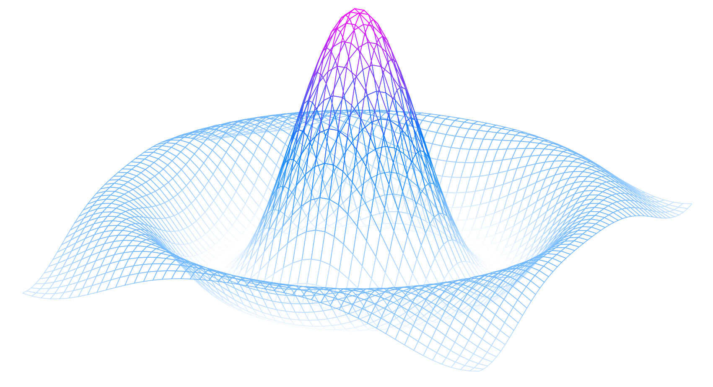

Études sur les fonctions en vue du test d’admission en mathématiques
Bienvenue
Les notes suivantes sont séparées en deux volumes:
- Études sur les fonctions en vue du test d’admission en mathématiques: Volume 1 - Notions fondamentales
- Études sur les fonctions en vue du test d’admission en mathématiques: Volumes 2 - Notions avancées
Ces notes ont été rédigées sur mon temps libre, et ne sont en aucun cas une source fiable pour un apprentissage mathématique rigoureux. Elle servent avant tout à introduire certaines notions utiles à la réussite du test d'admission en mathématiques pour le Bachelier en Informatique et Systèmes – Orientation : Sécurité des Systèmes.
Études sur les fonctions
Volume 1 - Notions fondamentales
Ce document est divisé en 4 parties:- Un rappel des règles de calcul numérique et litteral
- Une introduction générale à la notion de fonction (particulièrement les fonctions réelles à une variable réelle)
- L'analyse des fonctions affines
- L'analyse des fonctions quadratiques
Le premier volume est accessible en cliquant ci-dessous.
Notions fondamentales
Volume 2 - Notions avancées
Ce document a pour but d'introduire le calcul différentiel et intégral. Pour cela, plusieurs notions sont abordées:- Le théorème de Pythagore
- Certaines notions de trigonométrie
- Le calcul infinitésimal
- Les dérivées
- Les intégrales
Une version temporaire et inachevée du deuxième volume est accessible en cliquant ci-dessous.
Notions avancées